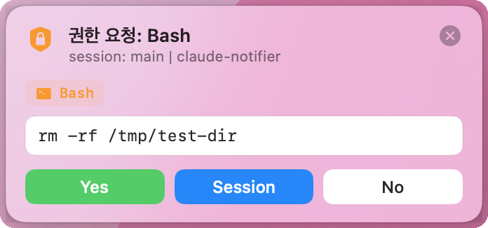
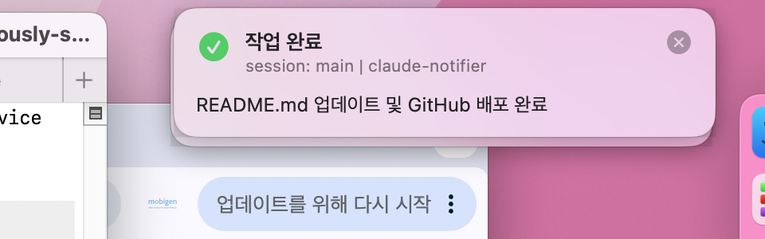
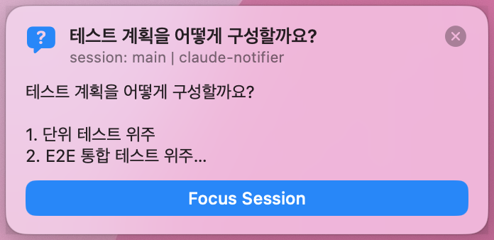

Terminal + tmux 환경에서 권한 요청, 작업 완료, 질문을
커스텀 플로팅 배너로 받고 버튼 하나로 응답하세요.
배너 미리보기
Claude Code가 무언가를 요청할 때 터미널을 보지 않아도 즉시 알 수 있습니다.

어떤 도구를 실행할지 배너로 표시. Yes / Session / No 버튼으로 즉시 응답, Claude Code가 결과를 받아 계속 진행합니다.

프롬프트 처리가 끝나면 완료 메시지를 배너로 표시. 클릭하면 해당 터미널 탭으로 자동 포커스됩니다.

Claude가 인터뷰 방식으로 질문할 때 배너에 요약을 표시. 클릭하면 터미널로 이동해 직접 답변할 수 있습니다.
주요 특징
방해는 최소로, 필요할 때만 정확하게.
터미널이 이미 포커스 상태라면 배너를 띄우지 않습니다. 다른 앱을 사용 중일 때만 알림을 표시합니다.
앱 미실행, 네트워크 오류, 타임아웃(기본 45초) 발생 시 Claude Code 기본 프롬프트로 자동 폴백합니다.
"Session" 허용 시 같은 도구는 세션 동안 자동으로 통과합니다. 반복 클릭 없이 작업에 집중할 수 있습니다.
여러 Claude 에이전트가 동시에 실행될 때 배너가 macOS 스타일로 우상단에 겹겹이 쌓입니다.
배너 클릭 시 tmux switch-client → TTY AppleScript 순으로 정확한 터미널 탭으로 포커스를 이동합니다.
어떤 상황에서도 사운드를 재생하지 않습니다. 자동 소멸도 없어 보지 못한 알림을 놓치지 않습니다.
아키텍처
hook → HTTP → 배너 → 응답의 단순한 흐름
Claude Code ──hook stdin JSON──▶ notify-hook.sh ──POST /event──▶ ClaudeNotifier 앱
│ │
│ 플로팅 배너 표시
│ │
◀──GET /response/{id} (long-poll)──┘
사용자 버튼 클릭
│
▼
permissionDecision: allow/deny ──▶ Claude Code 허용 / 차단
─────────────────────────────────────────────────────────────
Hook 종류 전송 방식 응답 필요
─────────────────────────────────────────────────────────────
PreToolUse POST /event ✓ long-poll → allow / deny
Stop POST /notify ✗ fire-and-forget
Notification POST /notify ✗ fire-and-forget
─────────────────────────────────────────────────────────────
설치
요구사항: macOS 13+, Xcode Command Line Tools, tmux(선택)
git clone https://github.com/uri010/claude-notifier.git cd claude-notifier
Swift 패키지를 릴리스 모드로 빌드하고 백그라운드에서 실행합니다.
./scripts/run-app.sh
~/.claude/settings.json에 PreToolUse / Stop / Notification hook을 등록합니다.
./scripts/install-hooks.sh
hook이 반영되도록 Claude Code 세션을 새로 시작합니다. LaunchAgent로 앱 자동 시작을 설정하면 로그인 후에도 자동 실행됩니다.
# 선택: 로그인 시 자동 시작
./scripts/install-launchagent.sh
HTTP API
기본 포트 47823 · localhost 전용
| 메서드 | 경로 | 설명 |
|---|---|---|
| GET | /health |
서버 상태 확인 → {status, pending, version} |
| POST | /event |
blocking 배너 등록 → {id} 반환 (권한 요청) |
| GET | /response/{id}?timeout=N |
결정 long-poll → {decision} 또는 {decision:"pending"} |
| POST | /notify |
fire-and-forget 배너 (Stop / Notification) |
| POST | /respond/{id} |
외부에서 결정 주입 (테스트 / CLI 자동화) |
| POST | /clear |
화면의 모든 배너 제거 |
decision 값
allow · allowSession · deny
· dismiss · focus · timeout
제거
설치한 항목만 선택적으로 제거할 수 있습니다.
~/.claude/settings.json에서 ClaudeNotifier hook 항목만 삭제합니다. 다른 설정에는 영향 없습니다.
./scripts/uninstall-hooks.sh
로그인 자동 시작 항목을 제거하고 앱을 종료합니다.
./scripts/uninstall-launchagent.sh
LaunchAgent 없이 직접 실행한 경우 프로세스를 수동 종료합니다.
pkill -f ClaudeNotifier
Session 허용 이력을 초기화합니다.
rm -f /tmp/claude-notifier-allowed-*